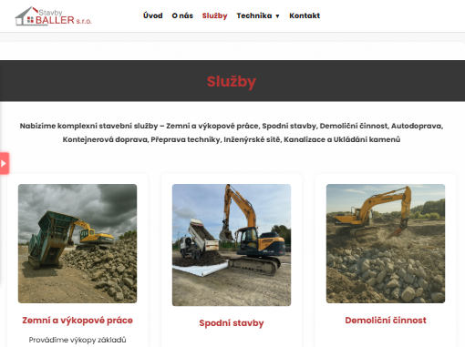
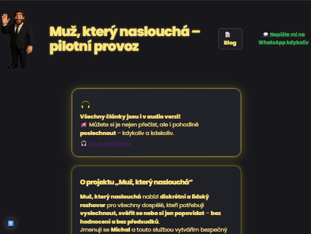
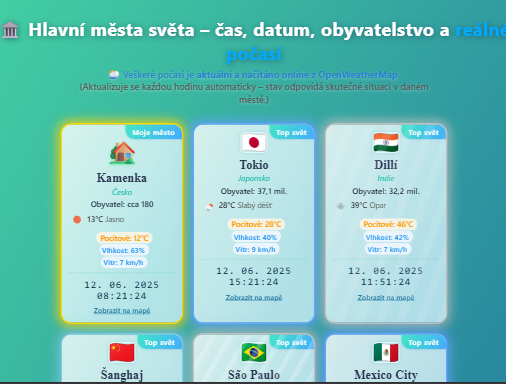

Můj příběh
Jsem Michal Bürgermeister, frajer, co začal v montérkách, vykašlal se na příručky a dneska posouvá hranice v IT. Věřím, že odvaha je víc než titul a selhání je lepší než život ve stínu ostatních.
Manuální práce mě naučila makat, IT mě naučilo nevzdat to. V životě ani ve vývoji webů nehledám zkratky, ale smysl. Kdo čeká normu, je tu špatně.
Od dětství mě učil život dávat věci do pohybu, ne čekat na povolení. Dceru jsem vychovával sám už od jejího jednoho roku – a dneska je z ní čtrnáctiletá slečna, co má v sobě stejnou dávku odvahy a chuti tvořit. Za svou druhou dcerou pravidelně jezdím každý měsíc do Prahy, protože když ti na něčem záleží, vždycky si najdeš cestu – ať je to rodina, nebo životní sen.Z průměru se šampioni nerodí. Proto dnes dělám projekty, které nesou otisk osobnosti – můj i tvůj. Tvořím pro lidi, co chtějí růst, ne přežívat.
Chceš poznat, jak vypadá spolupráce bez přetvářky? Tady mě máš. Klidně napiš – ať víš, jak chutná odvaha i technologie bez filtrů.
Proč právě já jako AI vývojář a Python expert v Opavě?
-
Žádné lhaní, jen pravda a výsledek
Ne všichni musí být na stejné vlně – když to mezi námi nefunguje, vím to hned a řeknu to upřímně. -
Kreativita místo copy-paste
Každý projekt je laboratoř, žádná pásová výroba. -
Byrokracie? Fobie!
Chci dělat kód, ne papíry. Odpověď máš rychleji, než ti někdo stihne odpovědět „zavolejte za týden“. -
Makám tam, kde to dává smysl
Spolupracuju jen na věcech, které posunou tebe i mě – jinak to nestojí za to. -
Sebevědomí a vděk v jednom balení
Umím říct „děkuju“ i „ne“, ale hlavně odvést práci, která má šmrnc a přidanou hodnotu.
Portfolio
-
Plugin Jarvis
Jarvis není další tupý chatbot. Je to osobní asistent, kterého si můžeš upravit po svém – a nebojím se mu vdechnout trochu ironie i lidskosti.
Přehrát na YouTube -
Kalkulačka hoření svíčky
Kalkulačka, která tě nebude nutit klikat na reklamy, a hlavně – výsledek chápe i babička. Design čistý jako svědomí, když nic neflákáš.
Přehrát na YouTube -
Plugin Afirmace
Život není o tasklistu. Tenhle plugin tě donutí na chvíli zastavit a mrknout, jestli jsi v hlavě v klidu. Pokud ne – máš další důvod ho zkusit.
Přehrát na YouTube -
Stavby Baller
Stavby jako důkaz, že firemní web nemusí být nuda ani pro „dělníky“. Klient i já jsme makali, dokud web nevypadal, že by se pod ním podepsal i brácha.
Zobrazit online -
Muž, který naslouchá
Většina projektů řeší tabulky, já občas radši řeším duši. Tady se člověk může svěřit a neslyšet za to žádný korporátní kecy.
Zobrazit online -
Počasí – hlavní města světa
Počasí, čas, lidi, mapa – vše na jedné stránce. Protože chci vědět víc než jen jestli mám vytáhnout deštník. Dělané pro lidi, co mají rádi přehled.
Zobrazit online
Certifikáty
Talent Innovation s.r.o.
Praha, 23. 10. 2024

coalsoft s.r.o., Brno
20. 6. 2024
dostupné cca za měsíc
Kontakt
Pokud chceš férový pokec o projektu, ne tříhodinovou poradu, jsi správně.